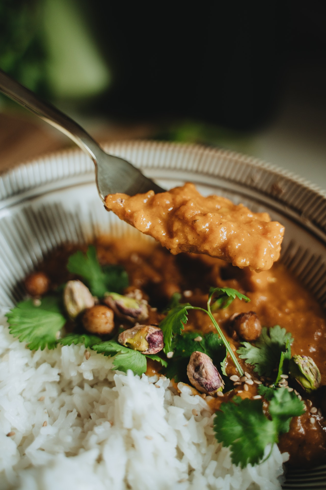

Rotes Linsen Dal

Zutaten für
Zubereitung
Öl in einem Topf erhitzten. Die gehackten Zwiebeln dazugeben und 2-3 Minuten glasig dünsten. Dann den Knoblauch und Ingwer hinzugeben und eine weitere Minute anbraten. Die Gewürze hinzugeben und anschwitzen lassen, bis es gut duftet. Die gewaschenen Linsen in den Topf geben und mit Gemüsebrühe aufgießen und aufkochen lassen. Zugedeckt 10 Minuten köcheln lassen, dann die Kokosnussmilch und die Tomaten dazu geben. Den Dal mir Zucker und Zitronensaft abschmecken.
Rezept erstellt von
Jahleel